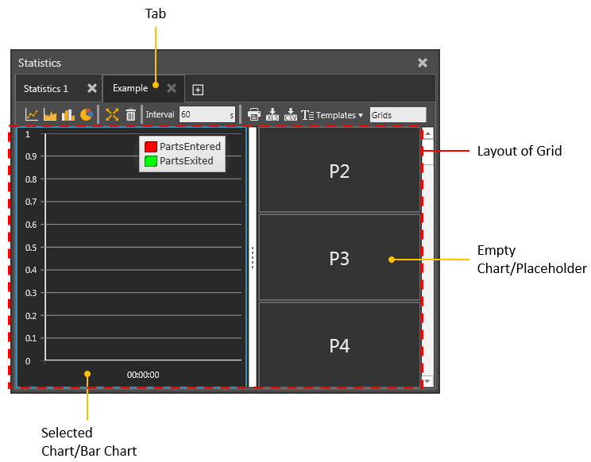

vcStatisticsTab is a tab listed in a Statistics dashboard and contains one or more charts which are organized in a grid.
Contents Hide
The layout of a grid is defined by rows and columns. Each grid location is a tile that is either an empty chart used as a placeholder or filled with chart reporting data.

| Name | Type | Access | Description |
| Charts | List of vcStatisticsChart | RW | Defines the charts of tab. |
| Layouts | List of List (String layout_name, List (String placeholder_name, Integer column, Integer row, Integer column_span, Integer row_span))) | RW | Defines the available layouts for tab grid. |
| MaxColumns | Integer | RW | Defines the maximum number of columns in tab grid. |
| MaxRows | Integer | RW | Defines the maximum number of rows in tab grid. |
| Name | String | RW | Defines the name of tab. |
| SelectedChart | vcStatisticsChart | RW | Defines the active chart of tab. |
| SelectedLayout | Integer | RW | Defines the current layout of tab grid. |
| SelectedLayoutItem | List of String layout_name, List (String placeholder_name, Integer column, Integer row, Integer column_span, Integer row_span) | RW | Defines the attributes of SelectedLayout.
Note: A layout has a name and a list for each of its placeholders/tiles. A placeholder defines the grid column and row size of a chart. |
| Name | Return Type | Parameters | Description |
| clearLayout | None | None | Deletes all charts from tab grid. |
| createChart | vcStatisticsChart | vcStatisticsChart location, Enumeration chart_type, Boolean activate | Adds a new chart of a given type to tab grid.
The location argument specifies where in grid to insert the new chart. In this context, the vcStatisticsChart object is a grid location. It can be a chart with existing data or an empty chart used as a placeholder. In either case, a call will remove the existing chart and exchange it with a new one in the grid. The activate argument can be used to make the new chart the active chart in tab. For more information on the chart_type argument, see Statistics Constants. |
| createLayout | None | None | Creates a new layout for tab grid. |
| deleteChart | None | Integer index
or vcStatisticsChart chart |
Removes a chart from tab grid, thereby replacing the old chart with a new empty chart used as a placeholder in grid. |
| selectChart | vcStatisticsChart | Integer index
or vcStatisticsChart chart |
Selects a chart in tab, thereby making it the active chart in tab. |
| from vcScript import *
app = getApplication() dashboard = app.Dashboard tab = dashboard.SelectedTab #deletes all charts from tab grid tab.clearLayout() #selects the first chart in grid, which is placeholder P1/tile tile = tab.selectChart(0) #inserts new bar chart in P1 and selects the new chart chart = tab.createChart(tile,VC_CHARTTYPE_BAR,True) |